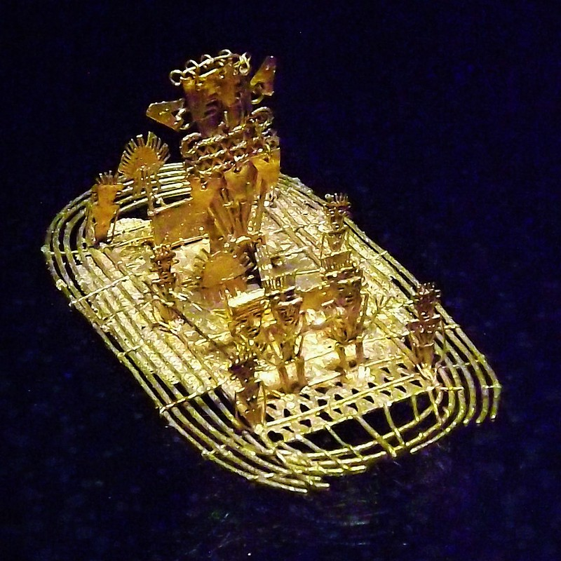
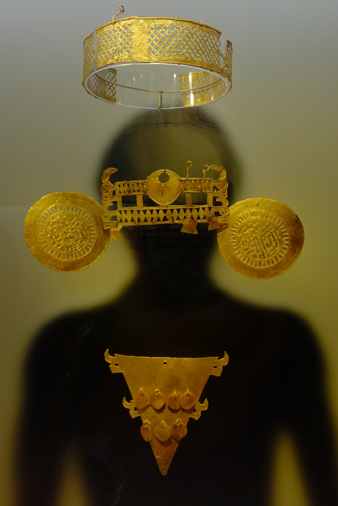

Cultura
Bogotá tiene más de 60 museos en los que se intenta rescatar la tradición, el patrimonio y la identidad colombiana. El más visitado es sin duda el emblemático Museo del Oro.
Museo del Oro de Bogotá
Banco de la República. (s. f.). Bienvenidos al Museo del Oro. Banco de la República. https://www.banrepcultural.org/bogota/museo-del-oro/bienvenidosEl Museo del Oro del Banco de la República tiene como misión preservar, investigar, catalogar y dar a conocer sus colecciones arqueológicas de orfebrería, cerámica, lítico y otros materiales, como un patrimonio cultural de las generaciones actuales y futuras de colombianos, con el fin de contribuir al fortalecimiento de la identidad cultural de los colombianos a través del disfrute, el aprendizaje y la inspiración. Esta misión se desarrolla en su sede de Bogotá y en otras seis salas de exhibición permanente, ubicadas en los Museos del Oro regionales, además de en exposiciones viajeras, publicaciones y juegos, la programación de talleres, seminarios y conferencias, la web y las redes sociales.
En el Museo del Oro podrás descubrir la tradición orfebre prehispánica. Enamórate de miles de objetos que cuentan la cosmovisión de grupos prehispánicos que estaban asentados en el actual territorio colombiano. Aprende sobre la leyenda de El Dorado y sorpréndete con la forma de vida que llevaron estas personas.
Datos clave para tu visita
- Ubicado en la Carrera 6#15-88
- Abierto de martes a sábado de 9:00 a 18:00 y domingos de 9:00 a 16:00
- Entrada gratuita para menores de 12 y mayores de 60 años
Si quieres conocer este lugar, he aquí algunas definiciones para entender mejor tu visita.
- Muiscas
-
Grupo indígena que habitaba la cordillera Oriental de los Andes. Fueron hábiles orfebres que trababajan el oro y el cobre, así como la cerámica. Conócelos mejor.
 - Cacique
-
Jefe de una tribu indígena.
 - Poporo
-
Recipiente en el que los indígenas guardaban cal que utilizaban en rituales o ceremonias religiosas junto a la hoja de coca.